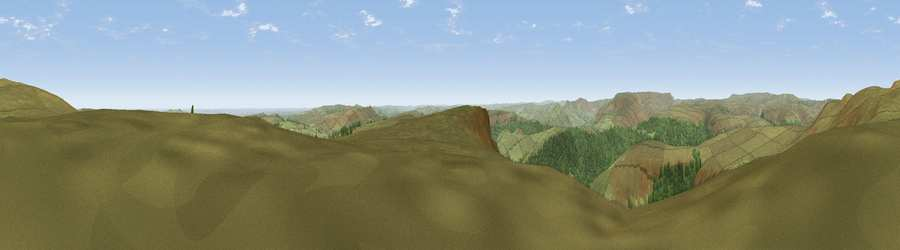

Viewpoint c7802_8395
#6023 in England · top 3% of its area beats it · — · open accessWhere it is
The exact computed spot (SK 19750 90125). Click the marker for map links.
Public access: this spot lies on mapped open-access land (CRoW Act 2000) — you may roam here on foot. Computed from Natural England's CRoW access layer and OpenStreetMap rights of way — not the legal definitive map. Always verify locally.
The view, rendered

A 360° render of this exact spot computed from the terrain model, tree cover and land cover — summer colours, afternoon light, calibrated against photographs of famous viewpoints. Real trees, hedges and buildings will differ in detail.
The panorama
Grey silhouette: terrain skyline in each direction (720 bearings, Earth curvature and refraction included). Dashed green: skyline with trees (+15 m) and buildings (+8 m) as obstacles. Blue strip: how far the ground is visible on each bearing.
Where the view opens
Wedge length = distance to the farthest visible ground on that bearing (vegetation-aware). Rings at 10, 25 and 50 km.
What fills the view
82% grassland · 16% woodland ·
Angular shares of the visible panorama (visual magnitude), not map area. Landscape diversity 0.23 (0–1 Shannon).
Key numbers
More beautiful places nearby
The staircase of upgrades: each row has a higher view potential than everything closer. Driving times are estimates from straight-line distance, calibrated against real road routing — check an actual route before setting out.
| Place | Direction | Drive | Score |
|---|---|---|---|
| Viewpoint c7795_8393 | S · 0 km | ~1 min | 71.7 |
| Viewpoint near Thornhill | S · 1 km | ~4 min | 74.1 |
| Viewpoint near Wharncliffe Side | ENE · 13 km | ~24 min | 75.2 |
| Wild Bank | WNW · 22 km | ~37 min | 76.2 |
| Viewpoint near Carrbrook | WNW · 23 km | ~38 min | 77.1 |
| Viewpoint near Mow Cop | SW · 47 km | ~67 min | 78.9 |
| Viewpoint near Mow Cop | SW · 47 km | ~68 min | 80.2 |
| White Brow | WNW · 58 km | ~80 min | 82.9 |
53.40758, -1.70438 · source: screening · position refined by local search. Computed location — check access rights before visiting.